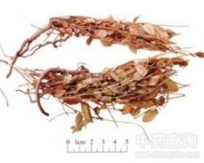

瓜子金

拼音
Guā Zǐ Jīn
别名
辰砂草、金锁匙、瓜子草、挂米草、竹叶地丁、金牛草
来源
为远志科远志属植物瓜子金Polygala japonica Houtt.或卵叶远志P. sibirica L.的全草。秋季采集全草，洗净，晒干。
生境分布
生长于山坡或荒野。分布东北、华北、西南、华东、中南及陕西。产广东、广西、四川、江西、湖南、福建、安徽、云南、浙江等地。
药材特点
多年生草本，高约15厘米。茎被灰褐色细柔毛，叶互生，卵形至卵状披针形，长10～20毫米，宽5～10毫米，先端短尖，全缘；叶柄短；叶柄、叶脉、叶缘均具细柔毛。总状花序腋生，最上一花序低于茎的顶端；萼片5。前面1萼片卵状披针形，呈囊状，两侧2萼片大形，花瓣状，广卵形或椭圆形，后面2萼片呈线状披针形；花瓣3，紫白色，下部愈合，背面近顶端处有流苏状附属物；雄蕊8；雌蕊1，子房倒卵形而扁。蒴果广卵形而扁，直径约5毫米，先端凹，具膜状宽翅，表面平滑无毛，萼片宿存。种子卵形而扁。花期4～5月。果期5～6月。
性状
干燥带根全草，长约20厘米。根圆柱形而弯曲，长短不一，多折断，粗约2～3毫米，外表灰褐色、暗黄棕色，有纵皱、横裂纹及结节，支根纤细。茎细，径不及1毫米，自基部丛生，灰褐色或稍带紫色，质脆易断。叶上面绿褐色，下面色浅或稍带红褐色，稍有毛茸。气微，味稍辛辣而苦。以全株完整、连根、干燥、无杂草泥沙者为佳。
性味
微辛，微温。
功能主治
活血散瘀，祛痰镇咳，解毒止痛。用于咽炎，扁桃体炎，口腔炎，咳嗽，小儿肺炎，小儿疳积，泌尿系结石，乳腺炎，骨髓炎；外用治毒蛇咬伤，疔疮疖肿。
用法用量
2～5钱；鲜用1～2两。
化学成分
根含三萜皂甙、树脂、脂肪油、远志醇。
药理作用
1：已开花植株的根及地上部分的5%浸液均有溶血作用
2：根的溶血作用与远志根（全远志）的溶血作用相当
摘录
《全国中草药汇编》